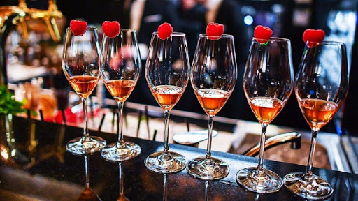
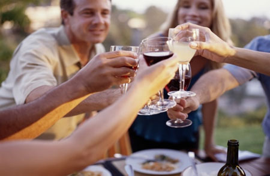

О культуре пития .. Категории качества европейских вин..


Классификация вина по категориям решает сразу две задачи: во-первых, помогает потребителям сориентироваться и выбрать наилучшее соотношение между ценой и качеством, во-вторых, устанавливает четкие стандарты, соответствуя которым, производитель может перейти из одной группы в другую. Любому вину (красному, белому сухому, сладкому, столовому и т. д.) можно присвоить одну из категорий. Вид вина определяет его крепость, содержание сахара и предназначение. Категория – это метрика качества, зависящая от региона производства.
Общая категоризация
Согласно регламенту Совета Европы №479/2008 от 29 апреля 2008 года, все европейские вина начиная с 2012 года делятся на три категории:
– AOP/DOP/PDO (Appellation d’Origine Protegee, Denominazione di Origine Protetta, Protected Designation of Origin) – заменяет высшую категорию, которая раньше существовала в каждой стране;
– IGP/PGI (Indication Geographique Protegee, Protected Geographical Indication) – местное вино, произведенное в конкретном регионе и минимум на 85% состоящее из винограда, выращенного в этой же местности;
– wine – заменяет понятие «столовое вино», которое использовалось в классификации разных стран для обозначения напитков без характерных региональных признаков, производители столовых вин получили право указывать на этикетке сорт винограда и год производства.
Все производители, которые находились в промежуточных национальных категориях, в зависимости от соответствия требованиям попадают в более высокую или более низкую категорию.
Занимательно, что параграф 3 статьи 59 регламента гласит: «Надпись AOP или IGP может не указываться на этикетке, если на ней указан традиционный термин». Это значит, что для производителей из базовых национальных категорий остались «лазейки», и многие виноделы их успешно применяют, нанося на бутылки «старую» маркировку. Поэтому наряду с новой общеевропейской, потребителям нужно знать и национальные классификации.
Категории французских вин
Именно Франция первой начала стандартизировать качество вин. Впоследствии созданную классификацию позаимствовало большинство европейских стран, создав свои национальные категории. Продукция французских виноделов контролируется институтом INAO (Institut National des Appellations d’Origine). Выделяют четыре категории вина:
– AOC (Appellation d’Origine Controlee) – высшая категория вин, контролируемая по региону (аппелласьону). К качеству этих напитков выдвигаются самые жесткие требования. Строго регламентируется территория, сорта используемого винограда, технология выращивания и производства, урожайность лозы, крепость и т. д. Перед продажей все вина категории AOC проходят обязательную дегустацию. На их этикетку нанесена аббревиатура «AOC» или ее расшифровка, где вместо слова «d’Origine» используется название региона. Например, для вин Бордо это «Appellation Bordeaux Controlee»;
– VDQS (Vin Delimite de Qualite Superieure) – вина с гарантированными параметрами качества, ожидающие присвоения более высокой категории – AOC. Хотя требования к этим винам-кандидатам несколько ниже, чем в первом случае, но большинство производителей стараются соответствовать самым высоким требованиям. Для покупателей это значит, что они могут приобрести вино категории VDQS, но получить напиток высшего качества;
– VdP (Vin de Pays) – местные вина. К этой группе относятся напитки, сделанные во Франции, но не попавшие в более высокие категории. Их сортовой состав, купаж и технология производства контролируются не так строго. Требования к урожайности лозы и крепости остаются. Фактически это вина для массового потребителя, не имеющие уникальных органолептических показателей, но их качество остается на достаточно высоком уровне;
– VdT (Vin de Table) – столовые вина, проходящие только лабораторный контроль. Для их производства может использоваться виноград, выращенный в других странах Европейского Союза (european table wine). Французские столовые вина (из местного винограда) маркируются надписью «vin de table francais».
Категории итальянских вин
В 1963 году Италия создала свою систему классификации качества вин, основываясь на уникальных характеристиках климата и почвы итальянских винодельческих регионов. Во многом эта категоризация напоминает французские стандарты. Итальянских производителей тоже делят на четыре категории:
– DOCG (Denominazione di Origine Controllata e Garantita) – высшая категория итальянских вин, проходящая строгий контроль и дегустационные тесты. Попасть в нее очень сложно. До 2008 года лишь 32 производителя удостоились этой чести. Из-за строгого отбора вина DOCG очень дорогие. Фактически эта категория позиционируется как элитная;
– DOC (Denominazione di Origine Controllata) – вина, контролируемые по происхождению. В каждом винодельческом регионе установлены свои стандарты. Вина категории DOC являются аналогом французских AOC;
– IGT (Indicazione Geografica Tipica) – местные вина, производимые только из сортов винограда, выращенных в определенном регионе. Требования к их качеству несколько ниже. В дословном переводе на русский категория IGT значит «типичное вино местности»;
– VdT (Vino da Tavola) – обычные столовые вина, к которым не выдвигаются особые требования касательно сортов винограда, технологии производства и купажирования. Это могут быть весьма качественные напитки, но без отличительной черты, присущей какому-либо региону.
Категории испанских вин
Испанцы решили не изобретать велосипед и позаимствовали французскую классификацию со всеми стандартами качества, изменив только названия. Предусмотрены следующие категории испанских вин:
– DOC (Denominacion de Origen Calificada) – высшая категория вин, контролируемая путем лабораторных тестов и дегустаций. В 1991 году категорию DOC получили вина региона Риоха, а в 2001-м – производители местности Приорат;
– DO (Denominacion de Origen) – аналог французской АОС, но в эту престижную категорию попадают только производители, которые на протяжении пяти лет демонстрировали превосходное качество своего вина;
– VdT (Vino de la Tierra) – местные вина, производители которых обязаны указывать на этикетке регион производства, сорта винограда и год сбора урожая;
– VdM (Vino de Mesa) – столовые вина с минимальным контролем качества. Могут производиться из любого сорта винограда.
Категории португальских вин
Во многом напоминает предыдущие классификации, но еще больше внимания уделяется региональному принципу. Выделяют пять категорий португальских вин:
– DOC (Denominacao de Origem Controlada) – марочные вина со строгим контролем названия и происхождения. Эта категория знаменита такими винами, как мадера и портвейн;
– IPR (Indicacao de Proveniencia Regulamentada) – вина регулируемого происхождения. Категория сложилась исторически, в нее попадает продукция 28 виноградников, установленных законом 1988 года;
– VQPRD (Vinhos de Qualidade Produzidos em Regioes Determinades) – качественные вина, произведенные по самым высоким стандартам, действующим их регионе. Категория может дополнительно присваиваться винам DOC и IPR, если производители желают подчеркнуть исключительное качество своей продукции;
– VR (Vinho Reginal) – в эту категорию попадают лучшие местные вина. Здесь нет четко определенных стандартов касательно сортов винограда, виноделы могут экспериментировать, создавая уникальные напитки;
– VdM (Vinho de Mesa) – столовые вина, к которым предъявляются минимальные требования качества.
Категории германских вин
Германские виноделы акцентируют внимание на выдержке вина, а не на регионе производства. В Европе только эта категоризация существенно отличается от французской системы. Все германские вина делятся на две группы: столовые и качественные, у каждой из них есть свои подвиды.
Качественные:
– QmP (Qualitatswein mit Pradikat) – вина высшей категории с минимальным сроком выдержки пять лет, некоторые сорта могут выдерживаться свыше 25 лет. Перед поступлением в продажу эти вина проходят обязательную дегустацию;
– QBA (Qualitatswein Bestimmer Anbaugebiete) – вина, производящиеся в одном из 13 установленных винодельческих регионов Германии. Должны соответствовать местным требованиям по качеству и составу. Проверка осуществляется путем лабораторных исследований и профессиональной дегустации вина каждого производителя.
Столовые:
– DT (Deutscher Tafelwein) – немецкие столовые вина, содержащие не менее 8,5% спирта. Выпускаются без добавок и красителей в соответствии с установленными экологическими стандартами;
– DL (Deutscher Landwein) – немецкие местные (особые столовые) вина, изготовляемые в 19 регионах из самого спелого винограда, собранного в конце сезона.